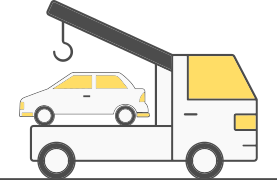
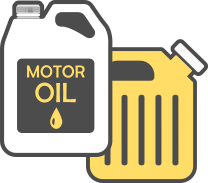
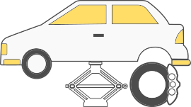
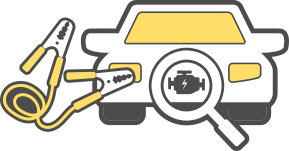

服務項目
拖救服務
車輛發生故障而無法行駛時，拖吊至車主指定或可以修復該車之處所。

加油加水服務
車輛因水箱缺水或汽油用罄，送油或送水所需之服務，但購買汽油所需之費用須自行負擔。

更換備胎服務
車輛因輪胎破裂導致車輛無法行駛或使行駛有危險之虞時，提供更換備胎之服務。 (但須自備備胎以及加裝或改裝之特殊拆卸工具，倘因現場無法拆卸者，將以拖吊方式處理。)

接電啟動
車輛因電瓶電力不足以致無法啟動，現場免費接電啟動服務。 (但接電會影響車輛電子儀器或不宜接電者，將以拖吊方式處理)

服務電話
快速接電服務，請直撥服務熱線 55688按851，此服務由台灣大車隊提供
道路救援服務，請直撥服務熱線，行遍天下 0800-071-111 或全鋒
0800-013-013。
同時申請道路救援及其他險種理賠服務時，請撥理賠服務熱線 0800-009-888，或洽富邦全省服務分支機構，將有專人為您服務。
服務說明
服務車輛
- 被保險汽車以自用小客車、自用小貨車及客貨兩用車空車為限，超過上述限制者另行報價。
- 申告服務之車輛倘車長超過5.2公尺、車寬超過2.1公尺或空車重超過2.5噸(含)以上，底盤、保桿、側 裙、排氣管等車輛零配件，距離地面高度低於12公分者，已逾一般拖吊車服務範圍，需議價處理，由保戶自付費用。
- 贈送道路救援使用權益車輛之車齡限10年內(含)，且須於監理單位領有牌照者。
服務條件及限制
- 自用小客車及客貨兩用車：
- (1) 投保車體險丙式以上車體險享不限次數道路救援服務(限20公里)；
- (2) 同一保單汽車任意險保費達新台幣5,000(含)以上者，享一次拖吊(限20公里)、一次其他服務
- 自用小貨車：投保車體險丙式以上車體險享一次拖吊(限20公里)、一次其他服務(限20公里)
- 其他服務:打氣服務、代送燃料油、代送冷卻水、更換備胎、接電服務(電動車不提供接電服務)
服務範圍及時間
- 台灣本島及澎湖，但限救援車輛所能行駛之道路。
- 24小時全年無休，但因天災人禍致提供服務有實質困難時除外。
- 同一天內同一服務項目，以服務一次為限；或同一服務項目連續服務最多以兩天為限。
需自費項目
- 使用於競賽、臨時變更為競賽及改裝之車輛或其他不符本公司道路救援使用權益者。
- 申告服務之車輛倘車長超過5.2公尺、車寬超過2.1公尺或空車重超過2.5噸(含)以上，底盤、保桿、側 裙、排氣管等車輛零配件，距離地面高度低於12公分者，已逾一般拖吊車服務範圍，需議價處理，由保戶自付費用。
- 車輛由修理廠拖吊至修理廠之間者及非故障車輛請求救援服務等，屬車輛運送服務案件者。
- 車輛四輪不在同一平面而需用特殊處理或機械式吊桿之服務者，如後輪驅動、後輪破損、車輛打滑、 陷入沙地泥沼、陷於凹處、輪胎卡死、架於安全島或凸起物、車輛翻覆、陷於懸崖山谷、或車輛位於施救車輛無法直接進入之地點等，費用需現場議價，並由保戶自付費用。惟另有投保『道路救援保險』時，其服務項目以保單條款所示為基準。
- 申告服務之車輛需以空車為限(不含載客及貨物)；倘保戶要求強制載貨且於拖救車承載安全範圍，費 用需現場議價，並由保戶自付費用。
- 未經本公司簽約之道路救援公司受理服務之任何費用。
- 國道高速公路局道路救援現場作業、待時費、小型車輛施救費。(詳見高公局網站)
- 超過免費里程後，每公里收50元里程費。
- 起吊後收費站、過路費、門票、收費停車場需自行負擔。
- 本公司服務項目以外之事項或費用。
- 詳細收費標準請參考「道路救援服務項目及收費標準表」
- 為因應高公局調整國道基本拖吊費率，109年5月1日起生效之保險單且符合本公司贈送道路救援服務 者，凡國道基本拖吊費用逾1,500元以上之部分，由保護自行負擔费用。(詳見高公局網站)
注意事項
- 如車輛位於依法令不得實施急修服務之路段如高速公路、一般高架橋及快速道路等地點，則一律先以 拖吊服務處理後再實施急修服務。
- 申告服務之車輛需以空車為限(不含載客及貨物)；倘保戶要求強制載貨且於施救車承載安全範圍，費用需現 場議價，並由保戶自付費用。
- 里程之計算以駕駛台內之里程表歸零，並經道路救援申請人確認無誤後起算。
- 若所需道路救援服務未符合免費資格及範圍，需自行給付費用。(自費金額將由救援單位線上進行報價。)
- 車齡逾10年或當年度贈送及購買使用逾3次(含)者，不適用免費道路救援。